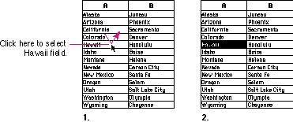
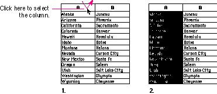
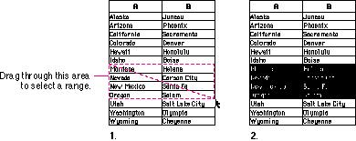
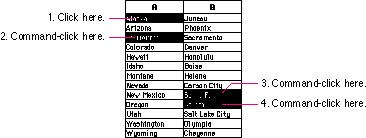

|
Selections in Arrays and TablesAn array is a one- or two-dimensional arrangement of fields. The user can select one or more fields or part of the contents of a field.To select a single field, the user clicks in the field. The user can also select a field by moving to it with the Tab or Return key. Selecting a field by clicking is illustrated in Figure 10-24. Figure 10-24 Field selection in an array  To select part of the contents of a field, the user must first select the field. The user then clicks again to select the desired part of the field. Because the contents of a field are either text or graphics, selections within a field follow the appropriate rules for either text or graphics. A table can support selection of rows and columns. The most convenient way for the user to select a column is to click in the column header. To select more than one column, the user drags through several column headers. The same behavior applies to selecting rows. Figure 10-25 shows column selection in an array. Figure 10-25 Column selection in an array  Figure 10-26 shows how a user selects a range in an array. Figure 10-26 Range selection in an array  A table can also support discontinuous selection of
fields in an array. The Figure 10-27 Discontinuous selection in an array  Pressing the Tab key cycles the insertion point through the fields in an order determined by your application. From each field, the Tab key selects the "next" field. Typically, the sequence of fields is first from left to right, and then from top to bottom. When the last field in a form is selected, pressing the Tab key selects the first field in the form. The user can press Shift-Tab to navigate in the opposite direction. That is, Shift-Tab moves the selection back one cell. If there's a good reason, an application may guide the user through the fields in some order other than the order in which the fields appear on the screen. The Return key selects the first field in the next row. The user can use Shift-Return to navigate up to the previous row in an array. If the idea of rows doesn't make sense in a particular context, then the Return key should have the same effect as the Tab key. |